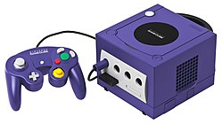

비디오 게임기의 History (6세대)
| 플레이스테이션2 | |
소니의 두 번째 가정용 게임기로, 그 당시에 거치형 게임기의 최대의 판매량을 자랑하고, 가장 상업적으로 성공한 기기라고 할수 있다. |
 |
XBOX |
마이크로소프트가 개발한 가정용 게임기 이다. 당시 본체만으로 온라인 서비스에 접속할 수 있는 것이 최대의 판매 전략이 였으나, 온라인 게임의 보급이 예상보다 늦어지고, 대작 게임의 부재 등으로 인해 라이벌 기종보다 유리한 요소는 되지 못 하였다. |
|  | 게임큐브 |
닌텐도가 발매한 가정용 게임기이다. 닌텐도의 게임기로서는 처음으로 게임 소프트웨어 매체로 광 디스크를 채용하였다. |
.jpg) |
 |
드림캐스트 |
세가가 출시한 가정용 게임기로, 발매 전 광고를 통해 어느 정도의 지명도를 얻엇지만, 그래픽 집의 개발이 예정보다 늦어져 첫 출하량은 예상보다 적었다. 이러한 상황은 곧 개발사들의 게임 공급 부족으로 이어졌고, 곧 세가는 하드웨어 사업에서 철수하게된다. |